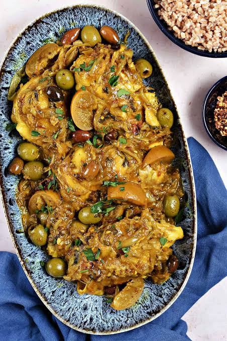

Moroccan Tagine

Tagine is Morocco's famous slow-cooked stew, named after the cone-shaped clay pot it is cooked in. Tender chicken simmers with preserved lemon, olives and warm spices such as cumin, ginger and turmeric, and is served with bread or couscous.
Ingredients
- 4 chicken thighs
- 1 onion, sliced
- 2 cloves garlic
- 1 tsp cumin
- 1 tsp ground ginger
- 1 tsp turmeric
- 1 preserved lemon
- 0.5 cup green olives
Instructions
Step 1: Season the chicken
Rub the chicken with cumin, ginger, turmeric, garlic and a little salt. Rest for 30 minutes.
Step 2: Simmer
Layer the sliced onion in the pot, add the chicken and half a cup of water, cover, and cook on low heat for about 1 hour.
Step 3: Finish and serve
Add the preserved lemon and olives, cook uncovered for 15 minutes until the sauce thickens, and serve with bread or couscous.
Nutrition Facts (approximate, per serving)
| Nutrient | Amount |
|---|---|
| Calories | 380 kcal |
| Carbohydrates | 12 g |
| Protein | 30 g |